Macedonian Opera and Ballet
Address: Goce Delchev 4
Phone: +389 (02) 3118 – 451
Address: Goce Delchev 4
Phone: +389 (02) 3118 – 451
- This year's operas:
- Giuseppe Verdi - La Traviata
- W.A. Mozart - Don Giovanni
- Gioachino Rossini - The Barber of Seville
- Upcoming: W.A.Mozart - Requiem [June 24, 9PM]
- This year's ballets:
- Pyotr Ilyich Tchaikovsky - Swan Lake
- Vasily Medvedev - Cleopatra
- Pyotr Ilyich Tchaikovsky - The Nutcracker
- J.S.Bach - On the Road
- Upcoming: La,la,la [July 1, 9PM]
'Cleopatra' - Vasily Medvedev Trailer
2015 New Year's Eve concert opening
Die Fledermaus, ( German: “The Bat”) operetta by Johann Strauss the Younger
Virtual tour of the theatre, courtesy of MNT.
Address: Iljo Vojvoda
Hours: 8AM-8PM [Closed on Sundays]
Phone: +389 2 323 0304
The Macedonian National Theatre is the oldest and largest theatre in Republic of Macedonia founded in 1945. Since its founding, the theatre team has staged nearly 300 premieres and the theatre troupe has given over 8,000 performances. It is aiming to establish and profile its own repertoire as well as aesthetic concepts by which it shall distinguish itself from the other theatres in Macedonia and at the same time promote itself as a national theatre institution.
Hours: 8AM-8PM [Closed on Sundays]
Phone: +389 2 323 0304
The Macedonian National Theatre is the oldest and largest theatre in Republic of Macedonia founded in 1945. Since its founding, the theatre team has staged nearly 300 premieres and the theatre troupe has given over 8,000 performances. It is aiming to establish and profile its own repertoire as well as aesthetic concepts by which it shall distinguish itself from the other theatres in Macedonia and at the same time promote itself as a national theatre institution.
{kind=link}
{kind=link}
The new building is situated on the left bank of the river Vardar and has been constructed on the foundation of the old theater which was
destroyed in the 1963. The building, covering 7,200 sq m. is designed in many ways to resemble the one that crumbled away in the
earthquake. The large auditorium, include parterre (ground level and two galleries-balconies) with a capacity of 724 seats and the small one with
around 213. It's also equipped with an up-to-date scene technology, which is a must for such institutions. The theater is luxuriously decorated,
with glided ornaments inside and outside and statues on the roof. The new building which meets the highest standards for construction of such
institutions, offers possibility for nourishing the art, culture and realizing high-quality performances.
Address: Mitropolit Teodosij Gologanov 4
Phone: +389 2 313 6185
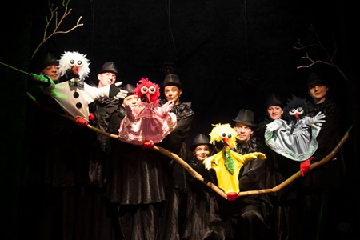
Phone: +389 2 313 6185
{kind=link}
 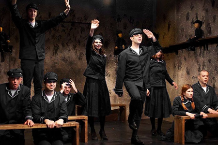
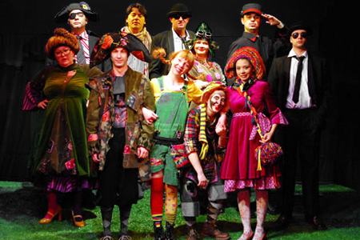
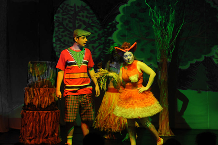
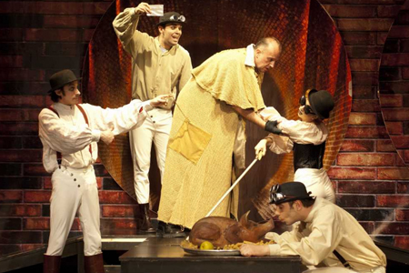
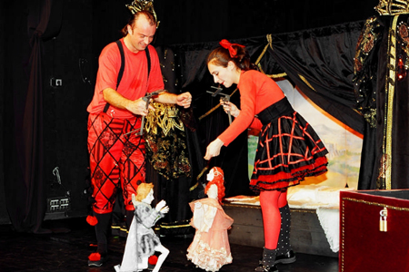
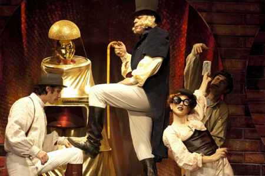
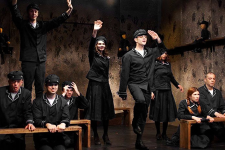
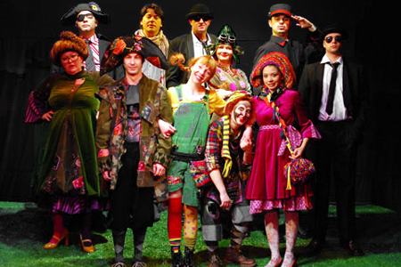
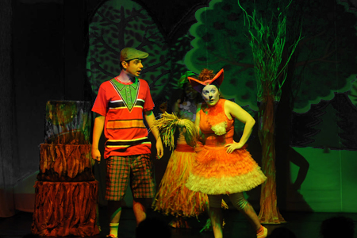
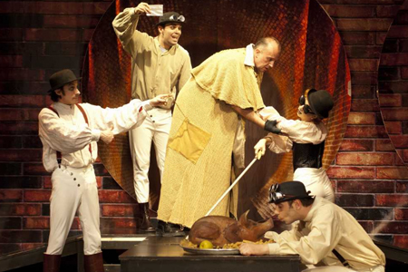
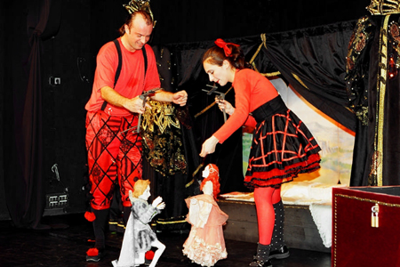
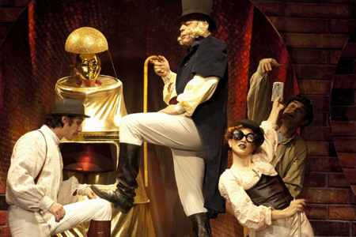
{kind=link}
{kind=link}
{kind=link}
{kind=link}
{kind=link}
{kind=link}
Address: Šekspirova 15
Phone: +389 2 306 3453
The Drama Theatre in Skopje is one of the oldest theatre institutions in the country. The beginnings date back to 21.04.1946 with the first puppet show "Siljan Strkot" ("Siljan the Stork") based on the folk story, while as an independent Puppet Theater it operates since 1949.
Phone: +389 2 306 3453
The Drama Theatre in Skopje is one of the oldest theatre institutions in the country. The beginnings date back to 21.04.1946 with the first puppet show "Siljan Strkot" ("Siljan the Stork") based on the folk story, while as an independent Puppet Theater it operates since 1949.
 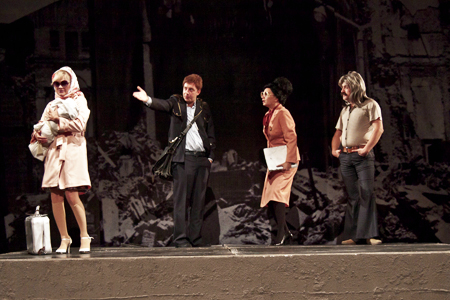
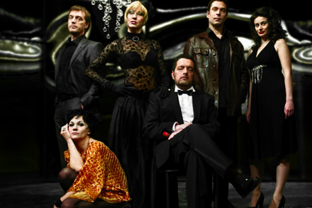
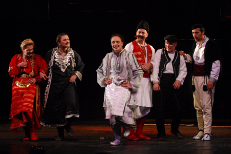
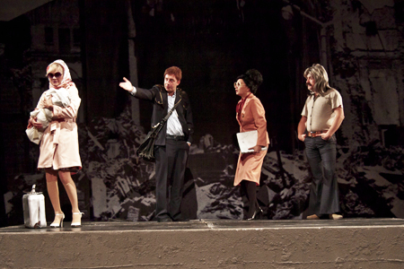
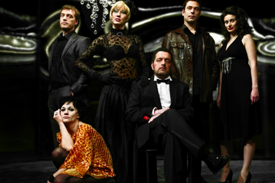
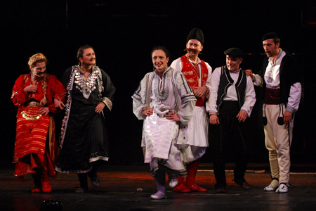
{kind=link}
{kind=link}
{kind=link}
Address: Boulevard Saint Clement of Ohrid bb
Phone: +389 71 365 034
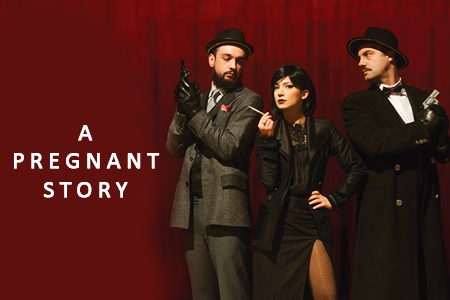
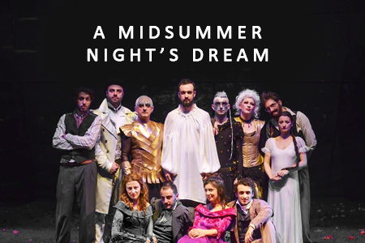
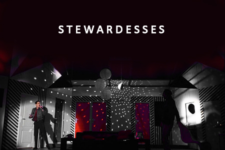
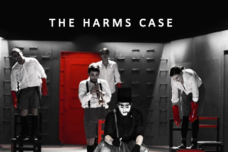
Phone: +389 71 365 034
{kind=link}
{kind=link}
{kind=link}
{kind=link}
Cineplexx
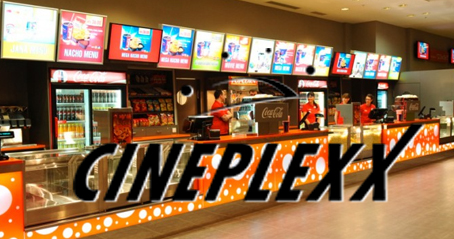Address: Manapo [Skopje City Mall]
Phone: +389 2 307 4477
Milenium
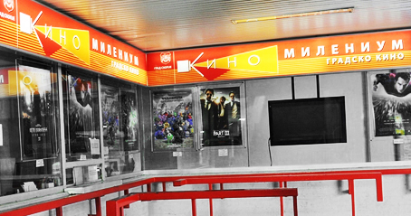Address: Dame Gruev bb
Phone: +389 2 312 0389
Kinosens 7D
Address: Bl. Kuzman Josifovski Pitu
Phone: +389 2 312 0389